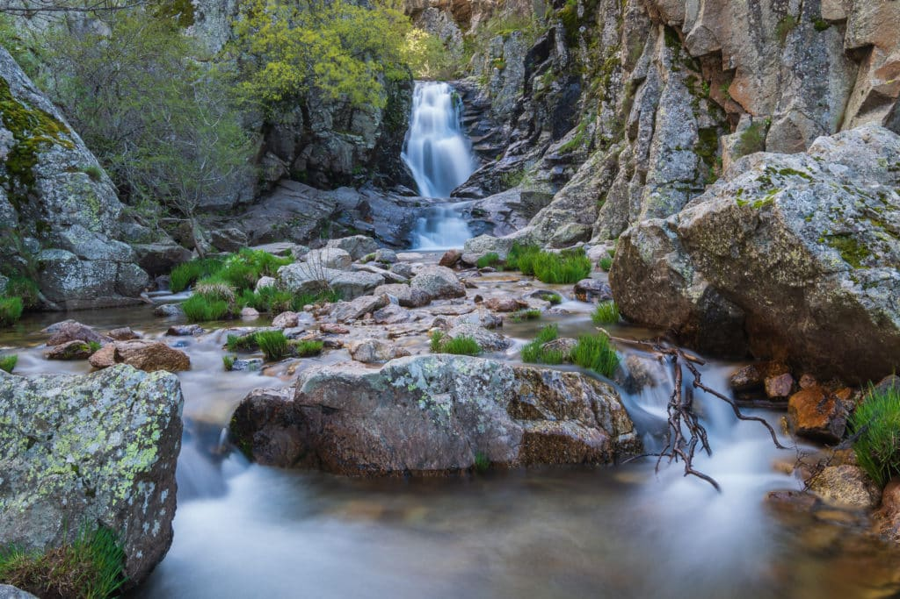

Vamos!!! Seguimos el Camino
La belleza del senderismo es que es realmente una actividad para todos.
Si eres joven o viejo, experto o aficionado, hay un sendero que será perfecto para ti.
Por eso hay frases de montaña motivadoras amantes del senderismo como tú.
La próxima vez que tú y tu compañero o compañeros de senderismo os embarquéis
en la próxima aventura, echad un vistazo a estas citas motivadoras sobre senderismo
para que os inspiren a pasar un día genial al aire libre.
Estas frases te recordarán lo maravilloso que es poder explorar este increíble mundo en el que vivimos.
Si eres un ávido excursionista, probablemente también estés enamorado de la belleza de la tierra.